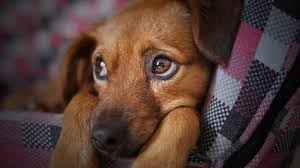

Na Patas do Bem, acreditamos que cada cachorro tem o direito de viver com dignidade, saúde e amor. Para transformar essa visão em realidade, desenvolvemos projetos que atuam diretamente no resgate, cuidado e reintegração de cães abandonados às suas novas famílias.
Resgate e Reabilitação
Resgatamos cães em situação de rua, abandono ou maus-tratos. Cada resgate envolve atendimento veterinário, alimentação, abrigo seguro e, muitas vezes, muito amor e paciência para curar traumas físicos e emocionais.
Saúde em Patas
Mantemos um programa contínuo de vacinação, castração e tratamentos veterinários para os nossos acolhidos, garantindo que estejam saudáveis e prontos para uma nova vida.
Adoção Responsável
Promovemos feiras de adoção e entrevistas com possíveis adotantes para garantir que cada cão encontre um lar seguro e permanente, onde possa ser tratado como parte da família.
